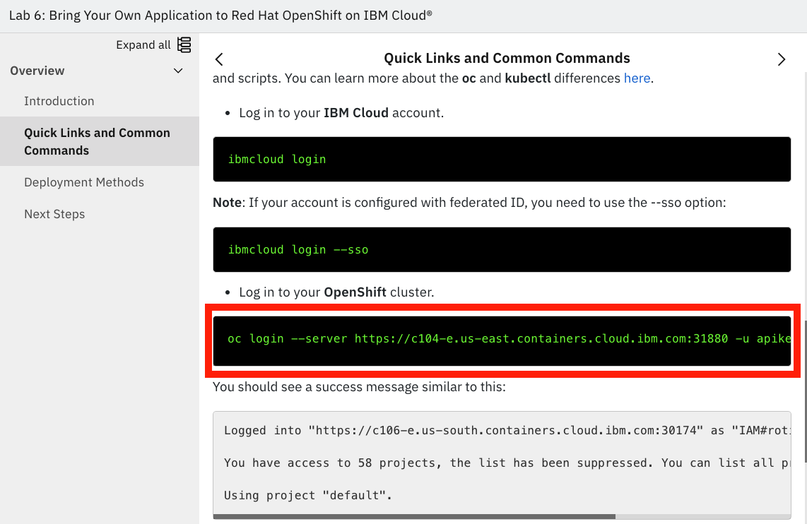
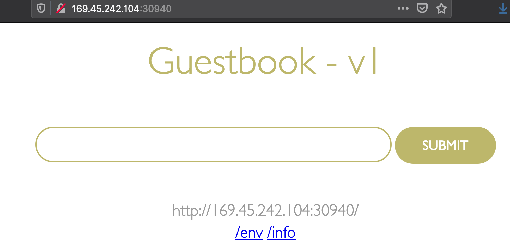
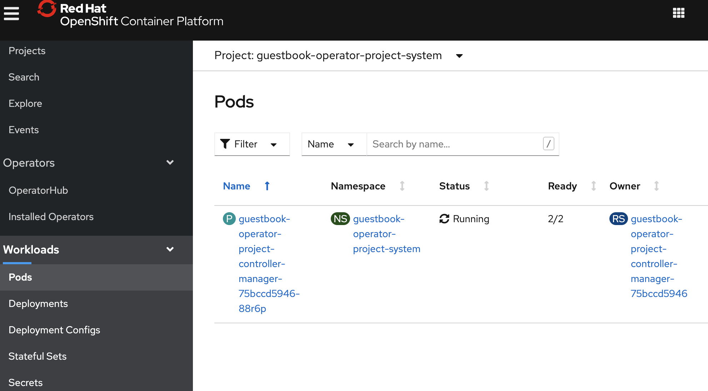
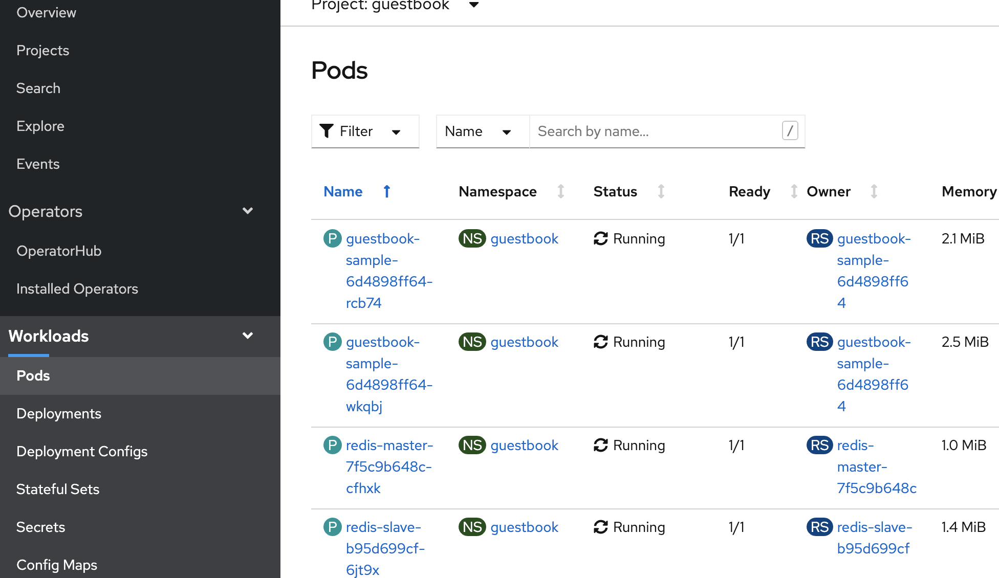

Create an Operator using an Existing Helm Chart¶
The Operator Framework is an open source project that provides developer and runtime Kubernetes tools, enabling you to accelerate the development of an Operator. The Operator SDK provides the tools to build, test and package Operators.
The following workflow is to build an operator using an existing Helm chart :
- Create a new operator project and initialize it using the SDK Command Line Interface(CLI)
- Create the API to generate the CRD files for the chart.
- Build the Operator container image and push it to a registry.
- Apply the CRD in the cluster and deploy the operator image.
- Deploy the operand by applying the custom resource (CR) into the cluster.
- Cleanup the deployment.
In this lab, we will use the IBM Guestbook helm chart available here as the base to scaffold a new operator.
Information on creating a new operator can be found here Operator SDK made several technology and architecture changes with the release of v1.0 which as listed here.
Setup¶
The following must be done before you can get started on the lab:
-
Create your lab environment by following the steps found here
-
The lab requires a newer version of the
operator-sdkinstalled. In the lab terminal, run the commands shown below to install the prerequisites:source <(curl -s https://raw.githubusercontent.com/ibm/kubernetes-operators/master/src/scripts/operatorInstall.sh) export PATH="${HOME}/bin:${PATH}"Run a version check after the$ source <(curl -s https://raw.githubusercontent.com/ibm/kubernetes-operators/master/src/scripts/operatorInstall.sh) Downloading operaror-sdk-v1.3.0-linux_amd64 ... % Total % Received % Xferd Average Speed Time Time Time Current Dload Upload Total Spent Left Speed 100 632 100 632 0 0 1876 0 --:--:-- --:--:-- --:--:-- 1875 100 64.8M 100 64.8M 0 0 61.9M 0 0:00:01 0:00:01 --:--:-- 61.9M operaror-sdk-v1.3.0-linux_amd64 downloaded. ......operator-sdkinstallation is complete:operator-sdk version$ operator-sdk version operator-sdk version: "v1.3.0", commit: "1abf57985b43bf6a59dcd18147b3c574fa57d3f6", kubernetes version: "1.19.4", go version: "go1.15.5", GOOS: "linux", GOARCH: "amd64" -
Log into the OpenShift cluster: Scroll down on the Quick Links and Common commands page until you see a terminal command block with green text and a description above it that says Log in to your OpenShift cluster. Click on the command and it will automatically paste into your terminal and execute.

-
This lab uses docker registry to container image storage. Create a new docker hub id, if you do not have one.
Create the operator¶
1. Create a new project & initialize it using SDK¶
Certain parameters will be used repetitively. Export these parameters as environment variables prior to starting the project.
Replace <your-docker-username> with your docker hub id.
export DOCKER_USERNAME=<your-docker-username>
export OPERATOR_NAME=guestbook-operator
export OPERATOR_PROJECT=guestbook-operator-project
export OPERATOR_VERSION=v1.0.0
export IMAGE=docker.io/${DOCKER_USERNAME}/${OPERATOR_NAME}:${OPERATOR_VERSION}
mkdir -p ${OPERATOR_PROJECT}
cd ${OPERATOR_PROJECT}
Use the operator SDK to initialize the project. Specify the plugin and API group as the parameters for this command.
operator-sdk init --plugins=helm --domain guestbook.ibm.com
$ operator-sdk init --plugins=helm --domain guestbook.ibm.com
Next: define a resource with:
$ operator-sdk create api
The initialization step create a scaffolding with the operator boiler plate code. At high level, this creates the config directory, watches.yaml and the place holder for the helm chart.
Use the command tree . to view the complete directory structure as shown in the block below:
.
├── Dockerfile
├── Makefile
├── PROJECT
├── config
│ ├── default
│ │ ├── kustomization.yaml
│ │ └── manager_auth_proxy_patch.yaml
│ ├── manager
│ │ ├── kustomization.yaml
│ │ └── manager.yaml
│ ├── prometheus
│ │ ├── kustomization.yaml
│ │ └── monitor.yaml
│ ├── rbac
│ │ ├── auth_proxy_client_clusterrole.yaml
│ │ ├── auth_proxy_role.yaml
│ │ ├── auth_proxy_role_binding.yaml
│ │ ├── auth_proxy_service.yaml
│ │ ├── kustomization.yaml
│ │ ├── leader_election_role.yaml
│ │ ├── leader_election_role_binding.yaml
│ │ ├── role.yaml
│ │ └── role_binding.yaml
│ └── scorecard
│ ├── bases
│ │ └── config.yaml
│ ├── kustomization.yaml
│ └── patches
│ ├── basic.config.yaml
│ └── olm.config.yaml
├── helm-charts
└── watches.yaml
kustomization.yaml in all the directories. config/default and confg/manager contains the specification to inject the controller manager container into the operator pod as a side car. The confg/rbac folder contains a set of default access control rules. Review the Makefile to understand the operator-sdk, kustomize and docker commands executed for various tasks.
2. Create the API to generate the CRD files for the chart.¶
Next step, create the API artifacts. Provide the name and the location of the helm chart as input parameters to this command. This command will create the crd folder with the custom resource definition for the Guestbook operator. The command picks the latest version of the helm chart, if the helm version parameter is ignored.
operator-sdk create api --helm-chart=guestbook --helm-chart-repo=https://raw.githubusercontent.com/IBM/helm101/master/
operator-sdk create api --helm-chart=guestbook --helm-chart-repo=https://raw.githubusercontent.com/IBM/helm101/master/
Created helm-charts/guestbook
Generating RBAC rules
I0202 15:46:05.545032 48799 request.go:645] Throttling request took 1.005544854s, request: GET:https://c107-e.us-south.containers.cloud.ibm.com:30606/apis/extensions/v1beta1?timeout=32s
WARN[0003] The RBAC rules generated in config/rbac/role.yaml are based on the chart's default manifest. Some rules may be missing for resources that are only enabled with custom values, and some existing rules may be overly broad. Double check the rules generated in config/rbac/role.yaml to ensure they meet the operator's permission requirements.
Check the new additions to the scaffolding using the tree . command:
.
├── Dockerfile
├── Makefile
├── PROJECT
├── config
│ ├── crd
│ │ ├── bases
│ │ │ └── charts.guestbook.ibm.com_guestbooks.yaml
│ │ └── kustomization.yaml
│ ├── default
│ │ ├── kustomization.yaml
│ │ └── manager_auth_proxy_patch.yaml
│ ├── manager
│ │ ├── kustomization.yaml
│ │ └── manager.yaml
│ ├── prometheus
│ │ ├── kustomization.yaml
│ │ └── monitor.yaml
│ ├── rbac
│ │ ├── auth_proxy_client_clusterrole.yaml
│ │ ├── auth_proxy_role.yaml
│ │ ├── auth_proxy_role_binding.yaml
│ │ ├── auth_proxy_service.yaml
│ │ ├── guestbook_editor_role.yaml
│ │ ├── guestbook_viewer_role.yaml
│ │ ├── kustomization.yaml
│ │ ├── leader_election_role.yaml
│ │ ├── leader_election_role_binding.yaml
│ │ ├── role.yaml
│ │ └── role_binding.yaml
│ ├── samples
│ │ └── charts_v1alpha1_guestbook.yaml
│ └── scorecard
│ ├── bases
│ │ └── config.yaml
│ ├── kustomization.yaml
│ └── patches
│ ├── basic.config.yaml
│ └── olm.config.yaml
├── helm-charts
│ └── guestbook
│ ├── Chart.yaml
│ ├── LICENSE
│ ├── README.md
│ ├── templates
│ │ ├── NOTES.txt
│ │ ├── _helpers.tpl
│ │ ├── guestbook-deployment.yaml
│ │ ├── guestbook-service.yaml
│ │ ├── redis-master-deployment.yaml
│ │ ├── redis-master-service.yaml
│ │ ├── redis-slave-deployment.yaml
│ │ └── redis-slave-service.yaml
│ └── values.yaml
└── watches.yaml
View the contents of the CRD. Note the values for names and schema.openAPIV3Schema.properties.
more config/crd/bases/charts.guestbook.ibm.com_guestbooks.yaml
apiVersion: apiextensions.k8s.io/v1
kind: CustomResourceDefinition
metadata:
name: guestbooks.charts.guestbook.ibm.com
spec:
group: charts.guestbook.ibm.com
names:
kind: Guestbook
listKind: GuestbookList
plural: guestbooks
singular: guestbook
scope: Namespaced
versions:
- name: v1alpha1
schema:
openAPIV3Schema:
...
3. Build the Operator container image and push it to registry.¶
Login into the docker registry using your personal id and password.
docker login docker.io -u $DOCKER_USERNAME
$ docker login docker.io -u $DOCKER_USERNAME
Password:
WARNING! Your password will be stored unencrypted in /home/student/.docker/config.json.
Configure a credential helper to remove this warning. See
https://docs.docker.com/engine/reference/commandline/login/#credentials-store
Login Succeeded
Build the Guestbook operator container image and push image to the docker hub registry.
make docker-build docker-push IMG=${IMAGE}
make docker-build docker-push IMG=${IMAGE}
docker build . -t docker.io/rojanjose/guestbook-operator:v1.0.0
[+] Building 4.2s (9/9) FINISHED
=> [internal] load .dockerignore 0.0s
=> => transferring context: 2B 0.0s
=> [internal] load build definition from Dockerfile 0.0s
=> => transferring dockerfile: 237B
...........
...........
753e76240780: Pushed
4a3bef90e857: Pushed
d0e9a59c2057: Pushed
1d8db7e222a6: Pushed
00af10937683: Pushed
3aa55ff7bca1: Pushed
v1.0.0: digest: sha256:c0724c7f31a748094621b7623a81fae107511c23819b729f25878f7e5a7377dd size: 1984
You can view the local docker images by running:
docker images
$ docker images
REPOSITORY TAG IMAGE ID CREATED SIZE
rojanjose/guestbook-operator v1.0.0 590c0196c2b6 10 seconds ago 160MB
quay.io/operator-framework/helm-operator v1.3.0 57683a970d10 6 weeks ago 160MB
4. Apply the CRD in the cluster and deploy the operator image.¶
Install the Guestbook customer resource definition using the make install command:
make install
make install
/home/student/guestbook-operator-project/bin/kustomize build config/crd | kubectl apply -f -
customresourcedefinition.apiextensions.k8s.io/guestbooks.charts.guestbook.ibm.com created
oc describe CustomResourceDefinition guestbooks.charts.guestbook.ibm.com
Next step is to deploy the operator. Note that the operator is installed in its own namespace guestbook-operator-project-system.
make deploy IMG=${IMAGE}
$ make deploy IMG=${IMAGE}
cd config/manager && /home/student/guestbook-operator-project/bin/kustomize edit set image controller=docker.io/rojanjose/guestbook-operator:v1.0.0
/home/student/guestbook-operator-project/bin/kustomize build config/default | kubectl apply -f -
namespace/guestbook-operator-project-system created
customresourcedefinition.apiextensions.k8s.io/guestbooks.charts.guestbook.ibm.com unchanged
role.rbac.authorization.k8s.io/guestbook-operator-project-leader-election-role created
clusterrole.rbac.authorization.k8s.io/guestbook-operator-project-manager-role created
clusterrole.rbac.authorization.k8s.io/guestbook-operator-project-metrics-reader created
clusterrole.rbac.authorization.k8s.io/guestbook-operator-project-proxy-role created
rolebinding.rbac.authorization.k8s.io/guestbook-operator-project-leader-election-rolebinding created
clusterrolebinding.rbac.authorization.k8s.io/guestbook-operator-project-manager-rolebinding created
clusterrolebinding.rbac.authorization.k8s.io/guestbook-operator-project-proxy-rolebinding created
service/guestbook-operator-project-controller-manager-metrics-service created
deployment.apps/guestbook-operator-project-controller-manager created
View of what got deployed:
oc get all -n ${OPERATOR_PROJECT}-system
$ oc get all -n ${OPERATOR_PROJECT}-system
NAME READY STATUS RESTARTS AGE
pod/guestbook-operator-project-controller-manager-7bc6f986dd-2r898 2/2 Running 0 2m24s
NAME TYPE CLUSTER-IP EXTERNAL-IP PORT(S) AGE
service/guestbook-operator-project-controller-manager-metrics-service ClusterIP 172.21.110.64 <none> 8443/TCP 2m24s
NAME READY UP-TO-DATE AVAILABLE AGE
deployment.apps/guestbook-operator-project-controller-manager 1/1 1 1 2m24s
NAME DESIRED CURRENT READY AGE
replicaset.apps/guestbook-operator-project-controller-manager-7bc6f986dd 1 1 1 2m24s
5. Deploy the operand by applying the custom resource (CR) into the cluster.¶
Create a new project called guestbook where Guestbook application will be deployed.
oc new-project guestbook
$ oc new-project guestbook
Now using project "guestbook" on server "https://c107-e.us-south.containers.cloud.ibm.com:30606".
You can add applications to this project with the 'new-app' command. For example, try:
oc new-app ruby~https://github.com/sclorg/ruby-ex.git
to build a new example application in Ruby. Or use kubectl to deploy a simple Kubernetes application:
kubectl create deployment hello-node --image=gcr.io/hello-minikube-zero-install/hello-node
An example custom resource yaml file was automatically generated under the config/samples directory as part of the create API step earlier. This is based on the default values.yaml from the Guestbook helm chart under helm-charts/guestbook/values.yaml. Let's use this file to create the operand.
oc apply -f config/samples/charts_v1alpha1_guestbook.yaml
$ oc apply -f config/samples/charts_v1alpha1_guestbook.yaml
guestbook.charts.guestbook.ibm.com/guestbook-sample created
oc get all -n guestbook
$ oc get all -n guestbook
NAME READY STATUS RESTARTS AGE
pod/guestbook-sample-8594c8dc46-bl7sm 1/1 Running 0 75s
pod/guestbook-sample-8594c8dc46-qwgkv 1/1 Running 0 75s
pod/redis-master-68857cd57c-bjxt5 1/1 Running 0 75s
pod/redis-slave-bbd8d8545-57944 1/1 Running 0 75s
pod/redis-slave-bbd8d8545-rxqc5 1/1 Running 0 75s
NAME TYPE CLUSTER-IP EXTERNAL-IP PORT(S) AGE
service/guestbook-sample LoadBalancer 172.21.41.67 169.45.217.90 3000:30940/TCP 75s
service/redis-master ClusterIP 172.21.206.242 <none> 6379/TCP 75s
service/redis-slave ClusterIP 172.21.133.74 <none> 6379/TCP 75s
NAME READY UP-TO-DATE AVAILABLE AGE
deployment.apps/guestbook-sample 2/2 2 2 75s
deployment.apps/redis-master 1/1 1 1 75s
deployment.apps/redis-slave 2/2 2 2 75s
NAME DESIRED CURRENT READY AGE
replicaset.apps/guestbook-sample-8594c8dc46 2 2 2 75s
replicaset.apps/redis-master-68857cd57c 1 1 1 75s
replicaset.apps/redis-slave-bbd8d8545 2 2 2 75s
Validate the Guestbook application is running by accessing it with the following commands:
HOSTNAME=`oc get nodes -ojsonpath='{.items[0].metadata.labels.ibm-cloud\.kubernetes\.io\/external-ip}'`
SERVICEPORT=`oc get svc guestbook-sample -o=jsonpath='{.spec.ports[0].nodePort}'`
echo "http://$HOSTNAME:$SERVICEPORT"
http://169.45.242.104:30940
Copy and paste the above URL in a new browser tab to get to the Guestbook landing page as shown below: 
Open the OpenShift console to view the artificats created as part of this exerice.
Guestbook operator pod: 
Guestbook application pods: 
6. Cleanup the deployment.¶
Remove the Guestbook application by deleting the customer resource (CR).
oc delete -f config/samples/charts_v1alpha1_guestbook.yaml
$ oc delete -f config/samples/charts_v1alpha1_guestbook.yaml
guestbook.charts.guestbook.ibm.com "guestbook-sample" deleted
$ oc get all -n guestbook
No resources found in guestbook namespace.
$ oc delete project guestbook
project.project.openshift.io "guestbook" deleted
Finally, to delete the CRDs, run the make undeploy command:
make undeploy
$ make undeploy
/home/student/guestbook-operator-project/bin/kustomize build config/default | kubectl delete -f -
namespace "gb-helm-operator-system" deleted
customresourcedefinition.apiextensions.k8s.io "guestbooks.charts.guestbook.ibm.com" deleted
role.rbac.authorization.k8s.io "gb-helm-operator-leader-election-role" deleted
clusterrole.rbac.authorization.k8s.io "gb-helm-operator-manager-role" deleted
clusterrole.rbac.authorization.k8s.io "gb-helm-operator-metrics-reader" deleted
clusterrole.rbac.authorization.k8s.io "gb-helm-operator-proxy-role" deleted
rolebinding.rbac.authorization.k8s.io "gb-helm-operator-leader-election-rolebinding" deleted
clusterrolebinding.rbac.authorization.k8s.io "gb-helm-operator-manager-rolebinding" deleted
clusterrolebinding.rbac.authorization.k8s.io "gb-helm-operator-proxy-rolebinding" deleted
service "gb-helm-operator-controller-manager-metrics-service" deleted
deployment.apps "gb-helm-operator-controller-manager" deleted
This concludes the Helm Operator lab. Go here for additional information on building operators using Helm.